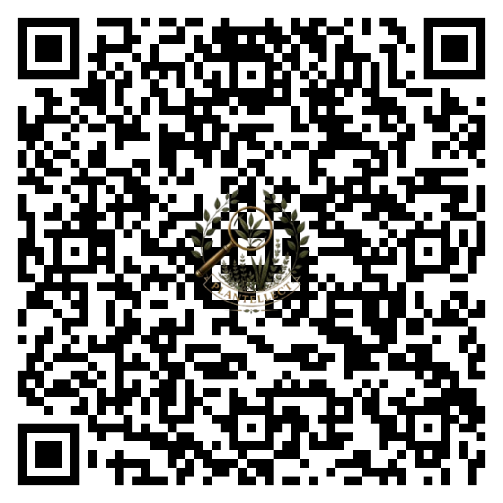

Plantellect is on your phone
Identify, share, and discover plants with a community that grows knowledge together. Sign in and start from the mobile app.
Download the appor scan with phone

Open your phone's camera, point it at the code and tap the link.